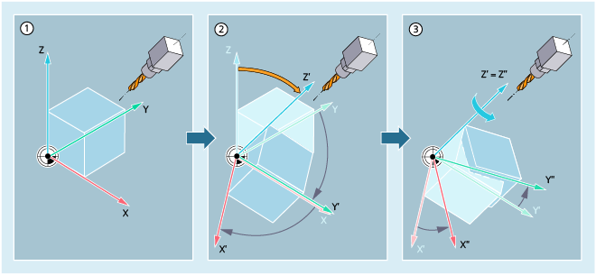

TOFRAME generates an orthogonal coordinate system, whose Z axis is parallel to the current tool alignment. For example, this can be used to retract the tool in the Z direction without risk of collision (e.g. after a tool break in a 5-axis program).
An already programmed frame is then overwritten with TOFRAME by a frame which describes a pure rotation. Any work offsets, mirrorings or scalings existing in the previously active frame are deleted. The position of the X and Y axes is determined by the setting in machine data MD21110 $MC_X_AXES_IN_OLD_X_Z_PLANE (coordinate system with automatic frame definition). The new coordinate system is either left as generated from the machine kinematics or is turned around the new Z axis additionally so that the new X axis lies in the old Z/X plane:
① | WCS before alignment with TOFRAME. |
② | TOFRAME rotates the WCS so that the Z axis points in the tool direction. |
③ | Only for MD21110 = 1: The new coordinate system is additionally rotated around the new Z axis (Z') so that the new X axis (X'') lies in the previous Z-X plane. |
Just the same as TOROT, TOFRAME aligns the WCS in the tool direction using a frame rotation; when doing this, it only overwrites the rotation component in the program frame. All other components (work offsets, mirroring operations and/or scaling operations) remain unchanged. This means that it is possible to keep a work offset with which the reference point was defined in the workpiece, for example.
| Note |
TOROTThe TOROT statement ensures consistent programming with active orientable tool carriers for each kinematic type. |
TOFRAME and TOROT are designed for milling operations in which G17 (machining plane X/Y) is typically active. In the case of turning operations or generally when G18 or G19 is active, however, frames are needed where the X or Y axis matches the orientation of the tool. These frames are programmed using commands TOFRAMEX/TOROTX or TOFRAMEY/TOROTY. The assignments of the axis directions are then as follows:
Statement | Tool direction (applicate) | Secondary axis | Secondary axis |
|---|---|---|---|
TOFRAME / TOFRAMEZ / | Z | X | Y |
TOFRAMEY / TOROTY | Y | Z | X |
TOFRAMEX / TOROTX | X | Y | Z |
The frame resulting from TOFRAME or TOROT, which describes the orientation, is written as default to system variable for the programmable frame ($P_PFRAME).
In addition, there is the option of writing frames that are created in a dedicated system frame $P_TOOLFRAME. To do this, bit 3 must be set in machine data MD28082 $MC_MM_SYSTEM_FRAME_MASK. The programmable frame is then retained unchanged. Differences occur when the programmable frame is processed further elsewhere.
PAROT aligns the workpiece coordinate system at the workpiece. Any work offsets, mirrorings or scalings existing in the previously active frame are kept.
| Note |
Just as in the situation for rotatable tool carriers, PAROT can be used to activate a rotation of the tool table. This defines a frame which changes the position of the workpiece coordinate system in such a way that no compensatory movement is performed on the machine. Command PAROT is not rejected if no orientable tool carrier is active. |